Discharge Tube/Helmholtz Coil Demonstration
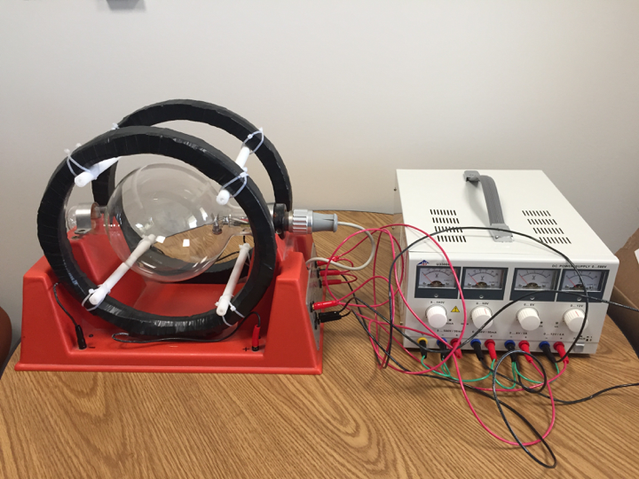
(last updated 7-JUL--2017 by Eric Prebys)
This demonstration uses a special discharge tube to create a visible
beam of electrons and a Helmholtz coil to create magnetic field to bend
these electrons into a circular path.
Table of Contents
Inventory
Theory of Operation
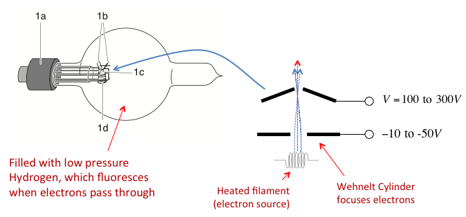
Figure 1
Figure1 shows the detail and the theory of operation of the tube.
A heated filament creates a beam of a electrons, which is accelerated
by a potential of up to 300 V. A small cylinder, called a
"Wehnelt Cylinder" is biased slightly negative to focus the
electrons. The velocity of the electrons is given by:
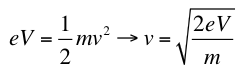
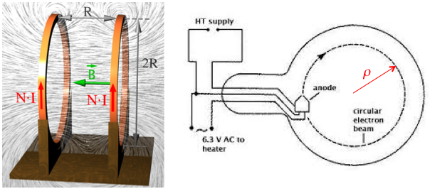
Figure 2
A pair of Helmholtz coils is used to create a magnetic field and bend
the electron beam into a circular path, as shown in Figure 2. The
magnetic field is given by
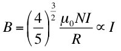
And this bends the electron beam into a radius given by
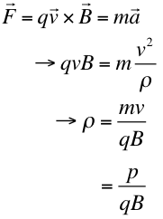
When we put the equations together, we get a dependence of the radius on the accelerating voltage and coil current given by
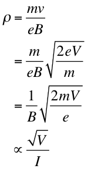
Setup
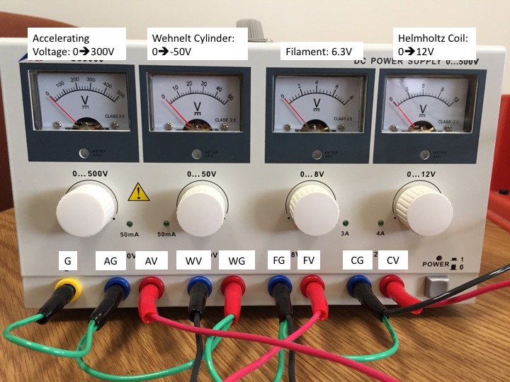
Figure 3
Figure 3 shows the integrated power supply for the system, along with
the special wire harness to make all the connections. This supply
provides the four voltage which are required:
- Accelerating Voltage (AV): The positive potential used to accelerate the electron (0 to 300V)
- Wehnelt Cylinder Voltage (WV): The negative potential used to focus the electrons (0 to -50V)
- Filament Voltage (FV): This provides the filament current to generate electrons (FIXED at 6.3V)
- Coil
Votage (CV): This provides the current for the Helmoltz Coil (0 to 12V,
4A max). With the present coils, it hits the current limit at
about 7V.
The wire harness connects ground to the negative pole of each of the
sources, except the Wehnelt bias, where the positive pole is
grounded.
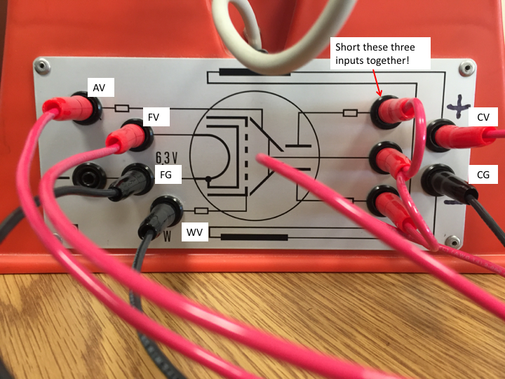
Figure 4
Figure 4 shows how these power sources are connected to the tube holder.
There are connections for deflecting plates on the right, which are not
used. It's important that these be shorted to the accelerating
voltage with the three connector jumper.
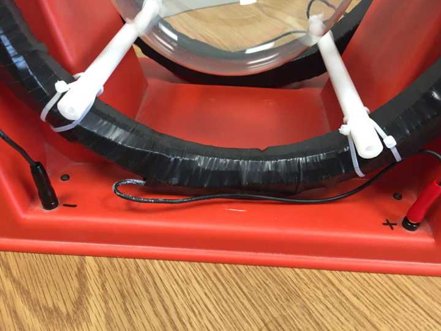
Figure 5
The coil inputs on the side panel are connected to coil
connectors on fixture. The two sides are connected to put the two
coils in series with the indicated polarity. Figure 5 shows the
connections to the Helmholtz Coil. Current should flow in both
coils in the same direction as the electrons.
Camera
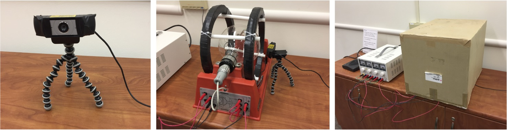
Figure 6
The beam is very faint, and only visible in complete
darkness. To
use the demo in a lecture all, you'll have to cover the system with an
opaque shroud and use a camera. In the past, we have enlisted
Reidar Hahn or Elliott McCrory to use their cameras, and it has worked
extremely well. If they are not available, we have purchased
a Logitech 930e webcam
and tripod for this purpose (Figure 6). You can position the
camera very close to the tube, so the box the equipment is in can be
used as a dark shroud, as shown.
With the default
settings, you will not be able to see the beam. You will need to
modify the camera settings by using the Logitech Gaming Software, which
can be downloaded here.
Connect the camera and launch the software. Click on the "Webcam
Settings" icon near the bottom right, select "Advanced", and make the following changes:
- Gain: Uncheck "Auto" and set to 100%
- Saturation: 100%
- Contrast: 0%
Then go to the "Webcam
control" tab and make the following changes
- Exposure: uncheck "Auto" and set to 100%
- If the image of the filament is not clear, you may need to
uncheck "Auto" on Focus, and manipulated it manually (not usually
necessary).
Finally, go back to the
"Advanced" tab and adjust the "Brightness" for best picture. Note
that the longer exposure will reduce the frame rate, but this should be
OK.
Keep the gaming software open, as you may need to visit the settings again (see below).
To view the webcam using, e.g, Quicktime,
lauch the program, then do "File->New Movie Recording", and select
the Logitech Webcam from the pulldown below the little red dot.
You don't actually need to start a recording. NOTE: starting Quicktime will probably reset the exposure to the default,
causing the image of the beam to suddenly disappear, so you will need
to set it back to maximum as described above. Other things, like
changing screen resolution by connecting a display, may also reset the
exposure. Once Quicktime is displaying correctly, you can go to
full screen mode.
Operation
Initially, all voltages should be set to zero. Switch the supply
on, then set the filament voltage (third knob from left) to exactly
6.3V. Do not change this! Exceeding this voltage could permanently damage the filament, ruining the device.
Reasonable initial settings for
the other supplies are:
- Accelerating Voltage (AV): 150V
- Wehnelt Voltage (WV): -20V
- Coil Voltage (CV): 4V
It takes a couple of minutes for the beam to become visible and about
five minutes to reach maximum brightness. Once it has, you can
use the accelerating voltage and magnetic field to adjust the radius of
the electron path, as illustrated in this video
(time sped up). As you change the accelerating voltage, you'll need to
vary the Wehnelt voltage to maximize the beam's brightness. Note
that with the present coils, the coil supply hits the 4A current limit
at about 7V.
Key Points in Demonstration
Ask the students which way the field has to point to bend electrons a
circle, and which way the current needs to flow to generate that field.
Demonstrate that increasing the accelerating voltage increases the radius of curvature, as in a cyclotron, but that simultaneously increasing the coil voltage can keep the radius constant, as in a synchrotron.